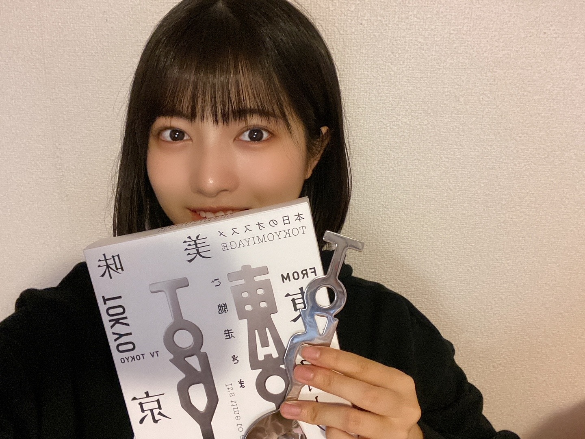
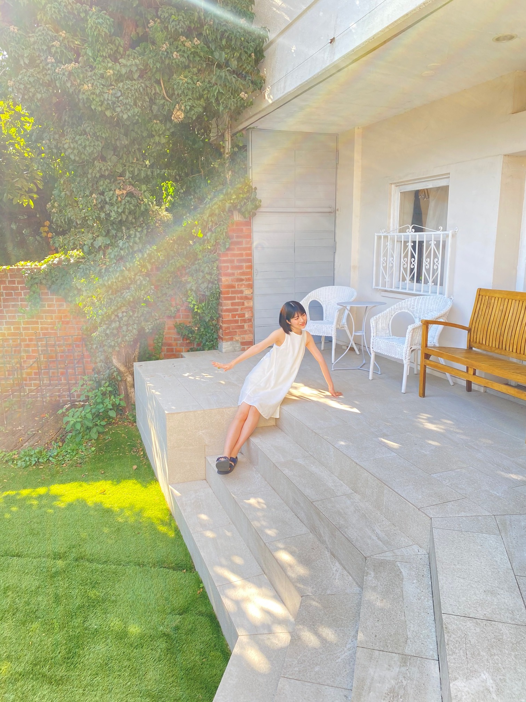
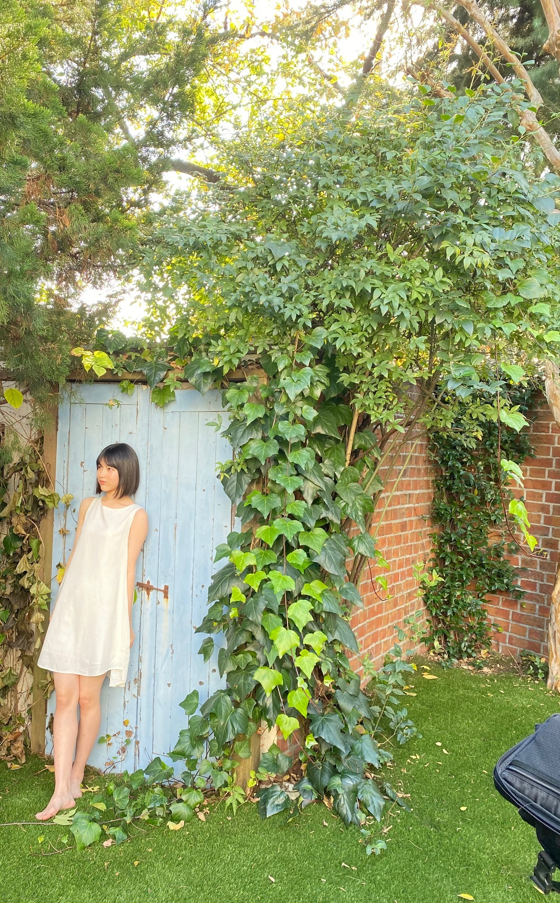
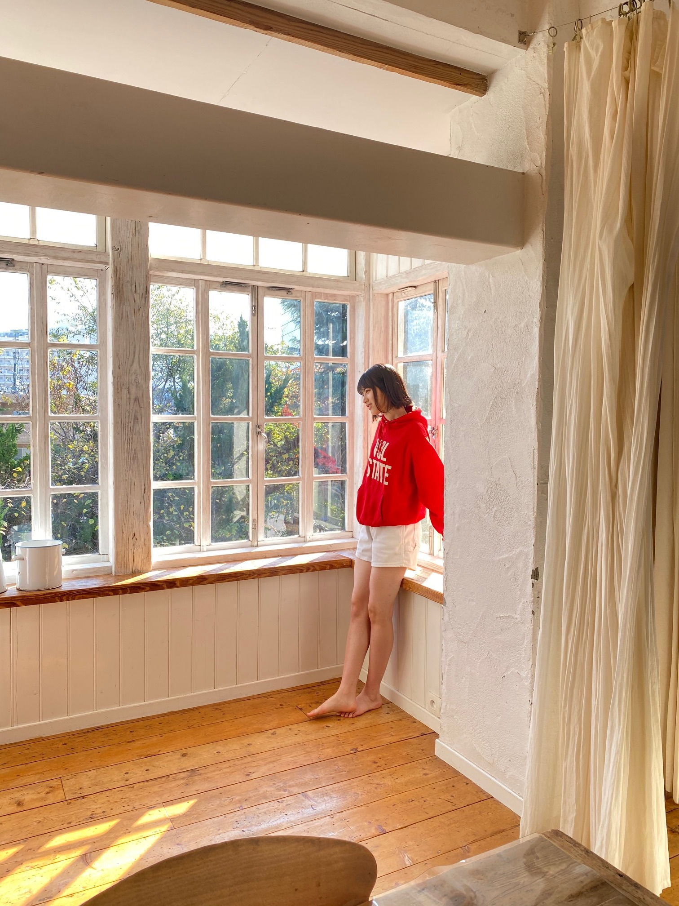
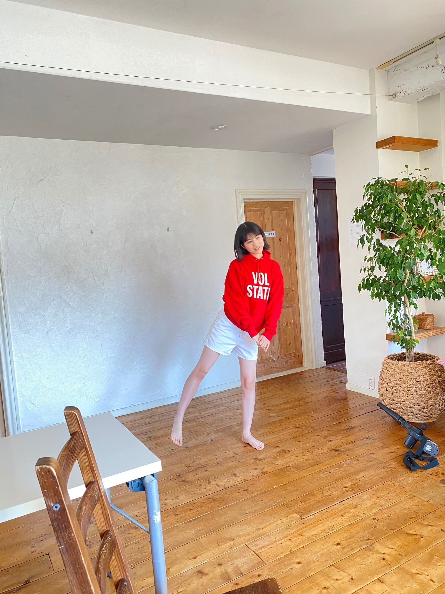

2020/1215Tueお疲れ様です！東京土産や〜！ 林瑠奈です。
本日もお疲れ様です。
乃木坂46、4期生の林瑠奈です。
神奈川県出身高校2年生17歳
華咲くセブンのティーンの林瑠奈です。
負けるなしょげるな林瑠奈、今日も1日頑張るな
(ピンポーン)
47周目となりました、ブログリレー。
予約していた『東京フォーク・TOKYOスプーン』が届きました！

さらばさんがやられてる番組の【今日からやる会議】をずっと拝見していまして、
この後ノギザカスキッツの収録でお会いしたときに、予約したことを伝えたら、「もうすぐ届くと思うわ〜」って言ってはったんですよ。
写真で出ている実物は、森田さんがデザインされたTOKYOスプーンです！
有り難く使わせていただきます〜
...........................................................................
12月6日発売の『ヤングマガジン』さんに、
黒見、璃果、松尾、弓木、林の5人で掲載していただいています。
以下、オフショットです。


BRODYさんやFLASHスペシャルさんを思い出しますね。


りかも言ってましたが、懐かしの白衣装です。
りかのオレンジって珍しいですよね。
なおの緑はわりとイメージ通りな感じ。
わたしは赤でした！
インタビューもしていただきました。是非！！
♪:*:･･:*:･･:*:･･:*:･･:*:･･:*:♪:*:･･:*:･･:*:･･:*:･･:*:･
12月8日。
レコメン！さんに出演させていただきました。
乃木坂四期生メガ盛り祭りです！
やくぼちゃんとあやめちゃんの珍しい組み合わせだったんですけど、のりさんのペースに揉まれながら楽しくお話しさせて頂きました。
タイムフリーで今日まで聴けるので是非！！
ちなみに今日は、さくちゃんとせーらちゃんが生出演しますよ〜！
♪:*:･･:*:･･:*:･･:*:･･:*:･･:*:♪:*:･･:*:･･:*:･･:*:･･:*:･
明日はミュウちゃんです。
みゆちゃんの自撮りがわたしの携帯に入ってるよ。
アディオス！！！！！！！
次のブログ担当日は12月20日！
いよいよM-1や〜！！たのしみすぎる！！！
かしこ

PROFILE
新4期生リレー
202104
| SUN | MON | TUE | WED | THU | FRI | SAT |
|---|---|---|---|---|---|---|
| 1 | 2 | 3 | ||||
| 4 | 5 | 6 | 7 | 8 | 9 | 10 |
| 11 | 12 | 13 | 14 | 15 | 16 | 17 |
| 18 | 19 | 20 | 21 | 22 | 23 | 24 |
| 25 | 26 | 27 | 28 | 29 | 30 | |

コメント(178)
お手許に届いたTOKYOスプーンは秀逸なデザイン。なるほど、このOの部分でスープ掬うんですな。って、こぼれてまうやないかい！……と、ボケツッコミから始まりました今回のコメントもよろしくお願いします。
今回の林さんブログは47回目ですか。さすが討ち入りの12月14日が近いだけあって、四十七士にちなんだ数字になるところがめぐり合わせの面白さ。
『ヤングマガジン』さんのオフショット、ありがとうございます。林さんだから緑かと思いましたら、トレーナーは赤でしたね。きっと懐かしの白衣装と合わせて紅白歌合戦出場を寿いでいるのでありましょう。おめでとうございます。
『レコメン！』出演お疲れさまでした。四期生メガ盛り祭り。ありがたいことです。みんなで四期生を盛り上げていきましょう。
ではまたコメント寄せます。今日も元気にがんばるな。
さらばだ、また会おう！（気球に乗って去りぬ〜）
オフショットありがとうございます！
光の差し具合も相まって、素敵な雰囲気になってらっしゃいますね
めっちゃ緊張してて、声高かったねｗｗ
クイズ面白かった！おめでとう！私は赤身肉簡単だったよ（見てたから
二人の共通点は、やっぱり目と乃木坂ファンだってことだと思うよ！
楽しかった！（ズッキュン見れて良かった）
愛媛県在住 中３女子 れいちゃんずより
追伸：今日も一日お疲れ様！
まだしんどさが続いてる．．．（2年前に時を戻したい！！）
（ぴんぽーん）
さっきLINELIVE見てたよー。
るなぴお疲れ様です！
オフショットありがとうございます♪
るなぴ本当にスタイル良いですよネ！
今日のくぼちゃんとのLINE LIVE観ましたヨ♪
本当に可愛かった！
僕の中でるなぴは面白い子ですが、やっぱり可愛いんですヨ♪声も表情も動きも！
普段ならやらないようなずっきゅんとかも可愛くて可愛くて、見れて嬉しかったですし、終始癒されました！
くぼちゃんとの絡みも新鮮で、でも2人とも似てる部分があるから、これからもっと仲良くなってからの絡みも楽しみですヨ♪
M-1の結果、今回はネタバレされないといいですネ(^^)
寒い日が続いていますが、体調に気を付けてくださいネ！
いつも応援してます！
4期生ライブもお疲れさま。
瑠奈さんの五臓六腑に染みる表現が好きです。
突然ですが、なぞかけを。
『僕は僕を好きになる』と掛けてメルセンヌ素数（発売日、1月27日の127）と解く
そのこころは？
A.唯一無二
（個性と、普遍性と、時間軸とが、交差し拡大する点景）
命を「掛ける」と言っていたことを思い出しました。
五臓六腑系のことば
『日本固有草木染色譜』の序
夜明け前の島崎藤村が友人の本の短い序文の中で、「光悦の腸（はらわた）をさぐり（る）」と表現しているところがあります。お好みですか。
オススメの曲
「さみしがり屋の言葉達」
安藤裕子
（ちょっと暗めの曲はノギスキの影キャラと二重写しになります。最近はみてないですが...）
某ラジオ番組をヒントに「四期生、小盛り祭りプラス」としてコメントしたよ。
それでは。
夜になった。ウサギも亀もバカだった。
アディオス！！！！！！！
フット
ちなみにTOKYOスプーンの使い心地はどうですか？
少し魅力的に見えて買いたくなってきています(笑)
最近、すごく寒くなってきたので体調と乾燥に気をつけてね！
LINE LIVE楽しかったよ～＼(^^)／
☆『アンダーライブ2020』始まりますね、、、
３日間全部エントリーしたけれど、
当選は、20日日曜日のみ !! ～ラッキーと言うべきかな ?
感染拡大でも開催中止はなさそうで、一安心しています。
18/19日は、「特典付き配信」にて、
20日は、久しぶりの日本武道館にて、
着席観戦かもしれないけれど、
小物を準備して行きます !!
応援しています !!
これから乃木坂を支えて行く、４期生の感覚はどうなのかな ?
☆ 26th ミーグリ 確保しています、、、
部屋でミーグリするときは、
ぼろ隠しのカーテンとか、
ブランケットとかが役に立ちましたので、
るなぴ、の「2020ブランケット」も注文しました !!
※福袋も頼んでいるのですが、目覚まし時計が楽しみです。
もう第３波がやって来てしまっているようです、、、
また寒い冬も始まっています、、
くれぐれも身体を大切にしてくださいね。。。。。
4期生ライブから少し時間がたちましたが・・・
4期生祭りが止まりませんな(￣ー￣)ﾆﾔﾘ
ちなみに，オフショット3枚目の窓際の写真が，僕の好みです(笑)
ふとした時に，頭の中に謎の定員さん
そろそろスキッツで第2弾が来ないか，楽しみにしています
それでは，次のブログ更新まで！
アディオス アミーガ！
うさぎの登り坂
ブログ更新ありがとう
先週のレコメン！聴きました
林さんの声が好きなのでラジオはピッタリだなと思いました。
猫舌でもやりたい仕事として挙げていたので、ますますの活躍を期待してます。
泣く泣くカットになったトランポリンデートが気になりすぎます。
翌日の放送で部分的に流れましたが、林さんのボヨーン、ボヨーンがシュール過ぎて面白かったです。
のりさんとの掛け合いがもっと聴きたいので、また是非遊びに来てください(^^)
体調には気をつけてね♪
明日も1日頑張ろうp(^^)q
これからも応援してます
お疲れさまです。
コメント中に大変失礼な誤字がありました。
訂正して、お詫びします。
命を「掛ける」✕
↓
命を「懸ける」○
「命を懸けるぐらい
成長できるように頑張ります。」
でしたね。
（研修生配属先発表の日のことば）
大変、申し訳ありませんでした。
以後、コメントは控えますね。
失礼しました。
フット
すごく見ていて楽しかったよー！
褒められた時の反応が独特だったり笑
乃木坂クイズも全問正解してたね！
途中、スケッチブックに書き忘れて動揺してる姿もちゃんと映っていて可愛かったです(笑)
メンバーから見た瑠奈ちゃんが意外な所が多くて沢山の発見がありましたね〜
久保史緒里さんたくさん話せて楽しそうな瑠奈ちゃんを見れた素敵な時間をありがとうございました！瑠奈ちゃんは話す系お仕事も文字にするお仕事どちらも丁寧で読み応えがあるからもっと好きな事が出来る機会が増えるといいね！
それではこの辺で…おやすみなさい〜
今まで乃木坂さんの握手会などのイベントには全く行ったことなかったんですけど、林瑠奈ちゃんに会いたくて今回僕は僕を好きになるのオンラインミートに申込みました！！抽選当たりました！
本当に楽しみです！！計3回あるので、何言おうか今から迷ってます。
アイドルは中学生の頃から好きで、当時はイベントも結構参加してたんですけど、でも大人になって今は会いたいと思うほどの人はあんまりいなくて、そんな中林瑠奈ちゃんには会いたいと思いました！！！
オンラインミートでどんな事をお話ししたいですか？？
会える日を楽しみに待っています。
一昨日のLINE LIVE 観たよ！ 明るくて、可愛いくて、おもしろくて、頭の回転早くて、久保ちゃんとのトークも息ぴったりで、るなちゃんの魅力いっぱいだったよ
凄く会いたくなったから、ミーグリ 追加で取れるか、頑張ってみるね(^o^ゞ
じゃあね(^-^)/
るなぴお疲れ様です！
オフショットありがとうございます♪
るなぴ本当にスタイル良いですよネ！
今日のくぼちゃんとのLINE LIVE観ましたヨ♪
本当に可愛かった！
僕の中でるなぴは面白い子ですが、やっぱり可愛いんですヨ♪声も表情も動きも！
普段ならやらないようなずっきゅんとかも可愛くて可愛くて、見れて嬉しかったですし、終始癒されました！
くぼちゃんとの絡みも新鮮で、でも2人とも似てる部分があるから、これからもっと仲良くなってからの絡みも楽しみですヨ♪
M-1の結果、今回はネタバレされないといいですネ(^^)
寒い日が続いていますが、体調に気を付けてくださいネ！
いつも応援してます！
「バナナの涙」は1986年の１月、うしろゆびさされ組がリリースした２枚目のシングル曲で、某テレビアニメのエンディング・テーマとして採用されました。ちなみに作詞は秋元康さんが、作曲は後藤次利さんが手掛けています。
2月のミーグリ当選したので楽しみにしてます
アディオス❗️
なってきたね。
輝いてます！！！
チャァオ〜〜〜!☆彡
可愛いい〜〜〜⤴️⤴️⤴️
才女のるなちゃん❕❤️❤️❤️❤️❤️笑顔
大人ぽい〜るなちゃんって〜〜〜⤴️⤴️⤴️
肩までかかるロングヘア〜も、ものすごく似合うと思うよおおお〜〜〜⤴️⤴️⤴️❕❤️❤️❤️❤️❤️笑顔
これから〜どんどん大人ぽくなる〜るなちゃんが楽しみです❕❤️❤️❤️❤️❤️笑顔
(＠＾▽゜＠）ゞ❤️❤️❤️
❇️❇️おすまし！⚜️❇️⭐彡
今回もお疲れ様。いつもありがとう。
素敵な東京土産だね！気になるから調べてみるね。
ヤンマガのグラビア最高だったよ！
色んなオフショットもありがとう。
インタビュー読んだよ！
ー加入して9ヵ月、心境の変化はありましたか？ー
の質問に対して、
“より周りのことを見ようという気持ちが強くなりました。”
と回答してたね。この回答は、瑠奈ちゃんが周りのことを見ようという気持ちを普段から大切にしている証拠だし、今後も大切にしたい気持ちなんだなぁ…、と感じたよ。
今後もその気持ちで色々な人を支えていってほしいなぁ…、と心から願ってるよ。
レコメンも最高だったよ！イルミネーションデート行きたくなったw
イブとクリスマス予定空いてるけどどう？w(やかましわ)
次のブログも期待してるな！w
お互い体調管理に気をつけて過ごそう。
アディオス！！！！！！！！
かしこ
p.s.
ついに今夜M-1やなぁ。自分も楽しみやー！
M-1の感想、いつか聴かせてなぁ〜w
(エセ関西弁やめろ)
チャァオ〜〜!☆彡
可愛いい〜〜⤴️⤴️⤴️るなちゃん❕❤️❤️❤️❤️❤️笑顔
学校のテスト終わった〜❔❤️❤️❤️❤️❤️笑顔
毎日お仕事で忙しい〜と思うけど、睡眠はしっかりとってねぇ⤴️⤴️⤴️❕❤️❤️❤️❤️❤️笑顔
るなちゃん風邪には、気を付けて頑張ってねぇ〜⤴️⤴️⤴️❕❤️❤️❤️❤️❤️笑顔
(＠＾▽゜＠）ゞ❤️❤️❤️
❇️❇️おすまし！⚜️❇️⭐彡
ヤングマガジン買いますね！！透明感あふれる瑠奈ちゃん...可愛い.....(TT)
あ、そうだ、ミーグリ行きます！！！楽しみにしてます！！
体調に気をつけてね
アディオス！！
かくてる
コメントする